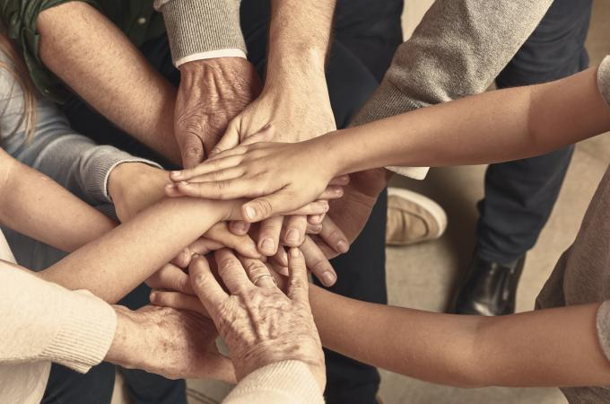

Comment vous pouvez aider une personne atteinte de cancer

Il existe pour vous de nombreuses façons de venir en aide à une personne atteinte de cancer.
Commencez par écouter
Vous ne savez pas trop quoi dire? C’est correct! La personne elle-même pourrait ne pas vouloir parler, mais ne refusera pas nécessairement votre visite. Souvent, le seul fait que vous soyez assis calmement avec l’autre est suffisant. C’est votre présence qui compte le plus. Si aucun de vous n’a envie de parler, vous pouvez quand même apporter votre soutien par une activité que vous ferez ensemble : faire une courte promenade, regarder un film, écouter de la musique ou n’importe quoi d’autre qui vous a réunis la première fois.Si la personne veut parler, soyez prêt à l’écouter. Si vous ne savez pas quoi dire, laissez-lui l’initiative. Vous n’avez pas à donner de conseils ni d’opinions si elle ne vous en demande pas. Ne vous mettez pas de pression. Soyez juste là pour l’autre.
N’ayez pas peur de dire ce qu’il ne faut pas
Il vient un moment où, même si on est mal à l’aise, il faut parler. Il n’y a pas de mots parfaits, mais il vaut beaucoup mieux commencer la conversation par « Comment te sens-tu? » que par « Comment vas-tu? » Ce qui convient, c’est d’employer des mots qui expriment l’intérêt, la sollicitude, l’encouragement et le soutien.
Voici d’autres exemples :
- Je ne sais pas trop quoi dire, mais je veux que tu saches que tu comptes pour moi.
- Je pense souvent à toi.
- Je suis désolé de ce qui t’arrive
Évitez les propos qui n’aident en rien. Les personnes atteintes de cancer ne veulent pas s’entendre dire qu’un autre a eu le même cancer et que c’était horrible, ni qu’elles ne doivent pas s’inquiéter parce qu’elles ont un « bon cancer ». Même si vous avez vous-même eu un cancer, retenez que chaque cas est particulier. Ne dites jamais que vous savez exactement comment l’autre se sent.
Informez-vous sur le type de cancer dont la personne est atteinte
Il existe de nombreuses formes de cancer, qui ont toutes des effets différents. La personne ne souhaite peut-être pas vous expliquer son diagnostic, car le faire à répétition est psychologiquement et physiquement épuisant. Préparez-vous à un changement d’apparence et de comportement. La personne pourrait avoir perdu des cheveux ou pris du poids, ou être exténuée par le traitement. Pensez à la dernière fois où vous avez été effrayé ou très malade. Comment vouliez-vous être traité? Suivez votre propre conseil.
Assurez-vous que le moment est bien choisi pour une visite
Une visite à la personne atteinte de cancer peut vous remonter le moral à tous les deux, et donner aux aidants un répit dont ils ont bien besoin. Rappelez-vous de toujours contacter la personne d’abord pour vous assurer que votre visite lui convient. Laissez-lui la possibilité de dire non. Sa décision peut aussi avoir changé à votre arrivée. Si la personne est soudainement trop fatiguée, maussade ou souffrante pour une visite, n’y voyez jamais une attaque contre vous. Dites-lui que c’est correct, que vous comprenez et que vous rappellerez pour vous reprendre une autre fois. N’allez voir la personne que si vous avez assez de temps. Un climat de hâte ne sera bénéfique pour aucun de vous. Fermez votre téléphone et rangez-le, puis accordez toute votre attention à l’autre. Il n’est pas défendu de faire des projets. Cela fournira un objectif stimulant à la personne, et vous aurez tous deux un sujet de conversation plaisant.
Laissez l’autre être triste
Riez et n’ayez pas peur de vous amuser avec l’autre, mais ménagez aussi un espace affectif pour la tristesse. Il est important de laisser l’autre exprimer sa tristesse ou son désarroi. Vous serez peut-être porté à vouloir lui remonter le moral en disant par exemple « Bien sûr que ça va aller, essaie d’être positif », mais la personne pourrait alors décider de taire ses véritables émotions. Le mieux que vous puissiez faire, c’est simplement d’être à l’écoute et de laisser la personne parler de ce qu’elle veut – même si cela vous déstabilise. Si vous vous sentez trop bouleversé, vous pouvez le lui dire et proposer d’en reparler plus tard. Évitez de changer de sujet sans d’abord reconnaître l’importance des préoccupations de l’autre. Si la personne pleure, n’essayez pas de l’en empêcher. Dites-lui au contraire qu’elle a tout à fait le droit de pleurer. Bien sûr, son chagrin peut être difficile à voir pour vous, mais dites-vous que les larmes sont une réaction naturelle de détresse et qu’elles peuvent être très libératrices.
Continuez d’offrir de l’aide quand les autres ne le font plus
Le traitement du cancer et le rétablissement peuvent exiger beaucoup de temps. Les personnes atteintes se voient souvent offrir beaucoup d’aide au début, mais les bonnes intentions finissent par s’essouffler. Soyez l’ami qui continuera d’offrir son aide et son soutien aussi longtemps que nécessaire. Parfois le cancer réapparaît. Le cas échéant, la personne atteinte pourrait réagir autrement à la situation, et avoir besoin d’un soutien différent. Vérifiez comment vous pouvez l’aider avant de répéter ce que vous avez fait après le premier diagnostic.
Comprenez que chaque diagnostic est unique
Chaque diagnostic de cancer est unique. La réaction de chaque personne atteinte l’est aussi. La maladie peut susciter chez elle une vaste gamme d’émotions. Ses états d’âme et ses attitudes pourraient varier d’un jour ou même d’une heure à l’autre. Vous ne pouvez tout simplement pas prédire comment l’autre personne se sent, ni savoir ce qu’elle vit. Respectez ses humeurs, et respectez ses choix face à sa maladie. Et souvenez-vous de ce que nous disions au début : le seul fait de vous asseoir et d’écouter est l’une des meilleures façons de soutenir une personne atteinte de cancer.